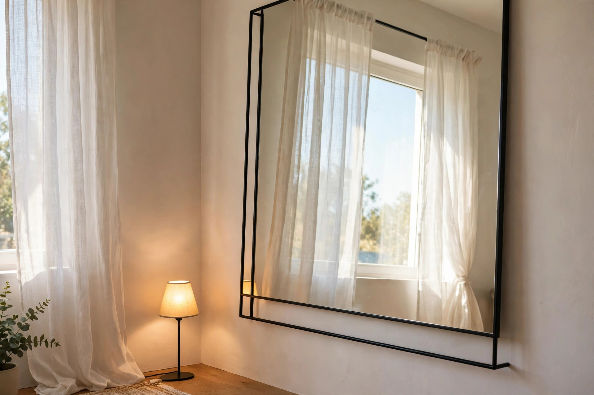
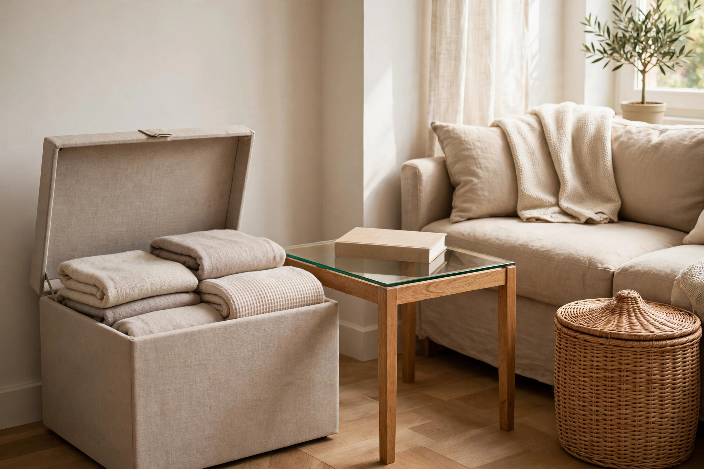

Small Living Room
How to Make a Small Living Room Look Bigger: 15 Budget Tricks
Intro
A small living room does not have to feel small. Usually the problem is not the size — it is visual clutter, the wrong furniture placement, and dark corners.
This guide has 15 tricks you can try today, with no demolition and no big spending. Most ideas cost $0–$50, and they are renter-friendly — they work without drilling holes in the wall or painting.

1. Pull the sofa a little away from the wall
Pushing the sofa flat against the wall makes the room feel even more closed in. Even a 5–8 cm gap creates a sense of air and shadow, and the room feels like it can breathe. A slim console or a small shelf can fit behind it too.
2. One big mirror, in the right place
Hang one big mirror opposite the window or beside it. It doubles the light and tricks the eye into thinking there is more space behind the room. One big mirror is better than lots of small ones. Budget tip: you will find one for $15–$30 at a thrift store or on Facebook Marketplace.
3. Light colours, from one family
White, pale beige, light grey or pale sage — keep one light palette across the whole room. When the sofa, curtains and rug are in matching tones instead of clashing, the line between wall and furniture blurs and the room feels open.
4. Hang curtains high and wide
Hang the curtain rod near the ceiling instead of just above the window, and make the rod 15–20 cm wider than the window on each side. Curtains should reach the floor. This makes the window look bigger and the ceiling look higher. Sheer or light curtains do not block daylight.

5. Let the furniture legs show
Heavy furniture that sits flat on the floor makes a room look crowded. Choose a sofa, TV unit and side table with visible legs — seeing the floor underneath is what makes the room look bigger. This trick is completely free if you just rearrange the furniture you already have.
6. Use a glass or acrylic side table
Your eye does not stop at a glass-top coffee table or an acrylic side table. It takes up space, but it looks visually light. In a small room, that is better than a solid, dark coffee table.
7. One big rug, not a small one
A small rug breaks the room into pieces. The front legs of the sofa should sit on the rug, and the rug should be big enough that the seating area feels like one zone. A light-coloured rug close to the floor colour works even better.
8. Use vertical lines to draw the eye up
Long, lightly striped curtains, a tall plant, or a vertical frame — they all draw the eye upwards. In a room with a low ceiling, this is the easiest trick of all.
9. Use 3 layers of light
Do not rely on a single ceiling light. Put a floor lamp in a corner, a table lamp on a side table, and if you can, a small warm light on a shelf. Corners full of light do not make a room feel small. Warm white (2700–3000K) feels the cosiest.
10. Hide clutter in closed storage
Loose things — remotes, chargers, magazines, toys — instantly make a room look smaller. Use a storage ottoman, a basket with a lid, or the space inside the TV unit. The rule is simple: anything you do not use every day should be out of sight.

11. Float furniture away from the wall, and leave space in the middle
Angle the sofa and chairs slightly towards each other to make a cosy conversation zone, instead of pushing everything against the wall. Empty floor in the middle — even just 60 cm — makes the room look bigger.
12. One big art piece instead of many small frames
Hang one big, light art piece on the wall instead of 8 small frames. Small frames distract the eye; a big piece gives one focus and keeps the wall clean.
13. Mount the TV on the wall and remove the stand
If you can, wall-mount the TV. The empty space below — even with just a slim bench, or nothing at all — is fine, because seeing the floor is enough. If you rent, a tall, slim TV stand that takes up little floor space works too.
14. Plants: one big one, not many small ones
One tall snake plant or a medium fiddle-leaf in a corner is better than 6 small pots. Small plants everywhere look like clutter. One plant, one corner, that is it.
15. Give everything one job — and one place
In a small living room, multi-use furniture is king: a storage ottoman (sitting + storage), a foldable side table, a sofa-bed for guests. Give everything a fixed place. Once everything has its place, the room feels bigger and calmer on its own.
Conclusion — Where to start?
If you only do 3 things, do these: (1) hang the curtains high, (2) put a big mirror opposite the window, and (3) spend 15 minutes today putting visible clutter into closed storage.
You can do all three today, and you will see the difference today. Try the rest one by one over the weekend.
Budget recap: Mirror $15–$30 (second-hand), sheer curtains $15–$25, storage basket/ottoman $20–$40, tall plant $10–$20. The rest — moving furniture, hanging curtains higher, clearing clutter — $0.
Pinterest pin titles (3 fresh pins, same article, different designs)
- "How to Make a Small Living Room Look Bigger — 15 Budget Tricks"
- "5 Free Ways to Make a Small Living Room Look Bigger"
- "Small Apartment Living Room: Mirror + Curtain Trick That Works"